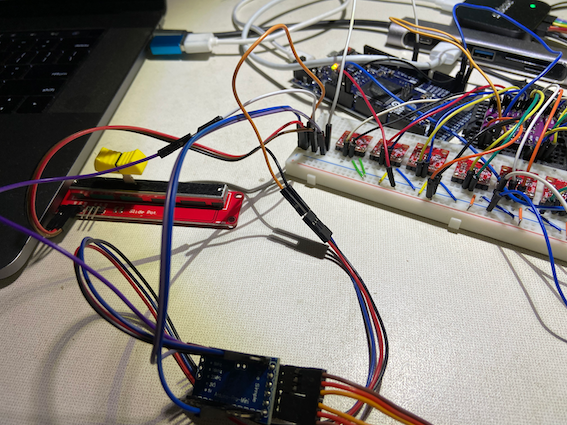
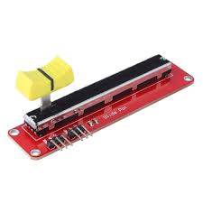
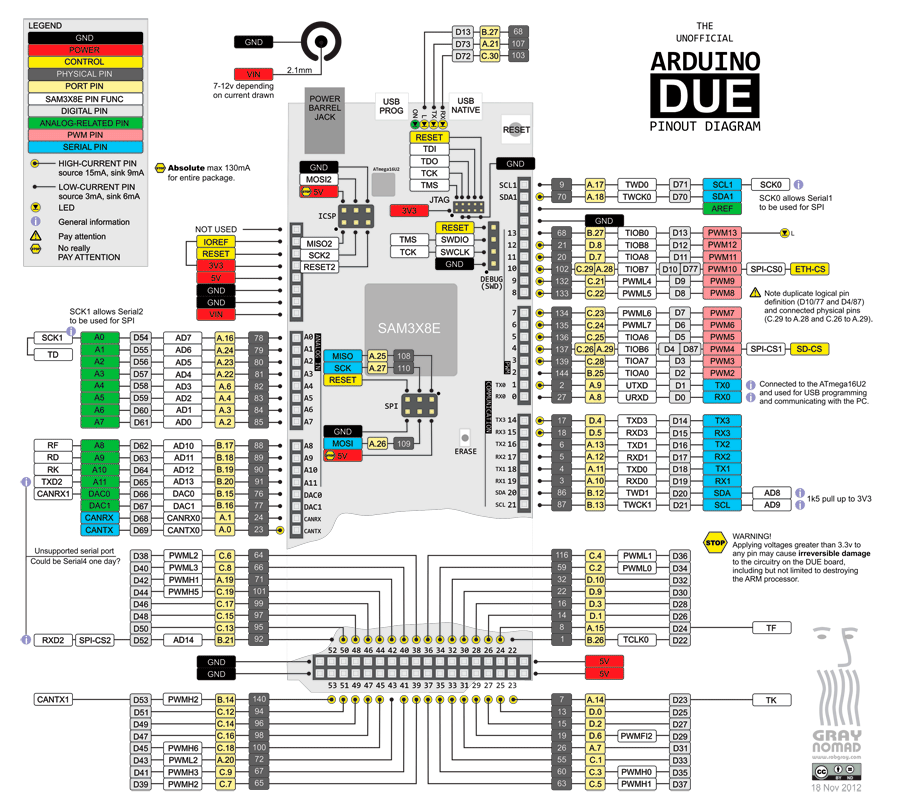
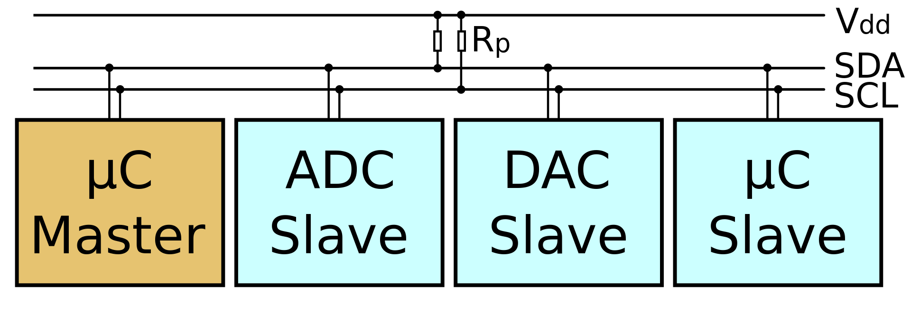
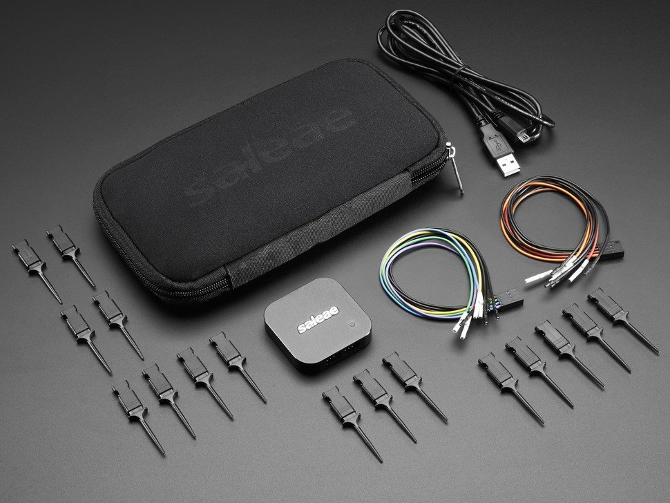
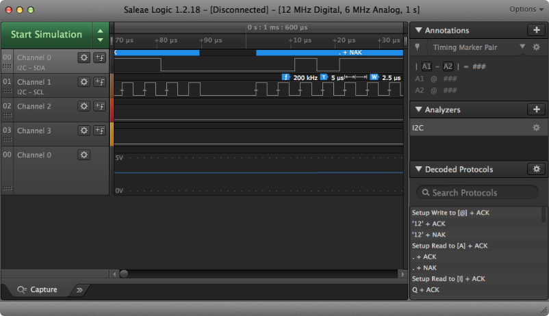
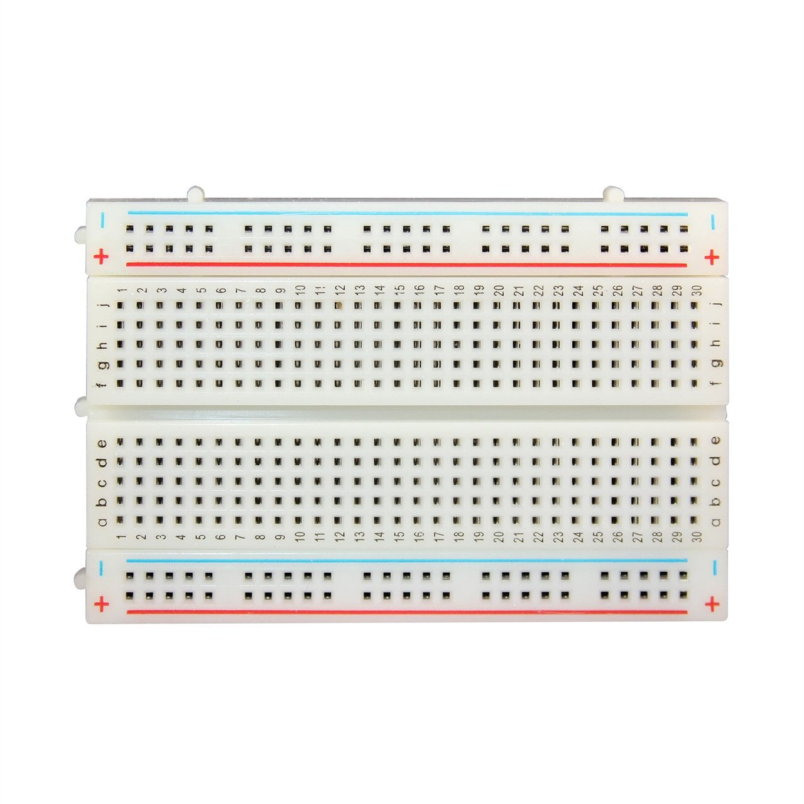

Arduino Introduction¶
Recently, my recent project use Arduino and relevant devices to help to emulate signals from sensors. It helps our development quite a lot especially the ‘up-stream’ part like data acquisition. The setup looks like following, which just shows very small part of the whole setup and this setup is evolving no matter the hardware and the software. Due to confidential consideration, this article will only stay on high level.
Project Introduction¶
Our main solution is an IoT project for vessel to help optimize operation. So we start this project to emulate the sensor signals from the vessel, which allows the development team to ease the development without access to the vessel. This project is very helpful for the crucial part e.g. data acquisition. The setup looks like following picture:
There are several parts:
Slide pot
Arduino
DAC
Breadboard
Slide pot¶
On real vessel deployment, one crucial parameter is the fuel rack position which indicate the rpm, and have big impact to the rest of the solution.
We use slide pot device to emulate the fuel rack. And we can change the bar position of the slide pot to emulate the change of the fuel rack position. This change will impact all the following signal generation like cycle length, rpm and pressure amplitude just like the vessel.
Arduino¶
Arduino boards are used to generate signals. Arduino is uC.
uC means microController (MCU). In modern terminology, it is similar to, but less sophisticated than, a system on a chip (SoC); a SoC may include a microcontroller as one of its components. As for system on a chip, that is a less well defined term. These are basically a microcontroller with small FPGA on the same chip. Instead of having built in peripherals, you can make whatever you want within the available resources of the FPGA.
pinout¶
The first step is to understand the board functionality by reading pinout like following.
Based on the project needs, we look into the pinout and decide how many pins to use, also GND pin.
I2C¶
I2C (Inter-Integrated Circuit) computer bus
widely used for attaching lower-speed peripheral ICs to processors and microcontrollers in short-distance, intra-board communication. I2C is appropriate for peripherals where simplicity and low manufacturing cost are more important than speed. Standard I2C devices only run at 100 kHz.
SCL and SDA pins are I2C pins.
SCL stands for Serial CLock.
SDA stands for Serial DAta.
Arduino development¶
The first step of Arduino development is to install Arduino IDE. Once the IDE is installed, it is quite straight forward to configure library and board type in the IDE settings.
And the focus area for the coding is two methods:
setup()
loop()
There are plenty of resources online to describe the basic programming part of Arduino.
For our project, we generate both analog and digital signals.
writeDigital()
Debugging¶
There are ways to help your development, one is serial output.
another one is Saleae Logic device
Once you connect the Saleae Logic to the Arduino output pins, you can see the signals on the Logic UI. The following picture is just an example. The UI is highly configurable and also straight forward to use for debugging purpose.
DAC¶
DAC means digital analog convert, d means digital, a means voltage/current. 数字模拟转换器（英語：Digital to analog converter，英文缩写：DAC）是一种将数字信号转换为模拟信号（以电流、电压或电荷的形式）的设备。 模拟数字转换器（ADC）则是以相反的方向工作。 典型的数字模拟转换器将抽象数转换为具体的脉冲序列，然后利用插值法输出近似连续的量。 其他的转换方法（例如基于ΔΣ调变的方法）则产生脉冲密度调制（Pulse-density modulation, PDM）进而产生平滑的连续信号。
Analog-to-digital conversion¶
A PDM bitstream is encoded from an analog signal through the process of delta-sigma modulation. This process uses a one bit quantizer that produces either a 1 or 0 depending on the amplitude of the analog signal. A 1 or 0 corresponds to a signal that is all the way up or all the way down, respectively. Because in the real world, analog signals are rarely all the way in one direction, there is a quantization error, the difference between the 1 or 0 and the actual amplitude it represents. This error is fed back negatively in the ΔΣ process loop. In this way, every error successively influences every other quantization measurement and its error. This has the effect of averaging out the quantization error.
Digital-to-analog conversion¶
The process of decoding a PDM signal into an analog one is simple: one only has to pass the PDM signal through a low-pass filter. This works because the function of a low-pass filter is essentially to average the signal. The average amplitude of pulses is measured by the density of those pulses over time, thus a low pass filter is the only step required in the decoding process.
In our project, we use DAC device with multiple channels to output analog signals.
Breadboard¶
A breadboard is a construction base for prototyping of electronics. It plays as ‘glue’ role in the project, and it connect different devices.
For example, all electric wires are connected if they are on the same row (with same number). At meantime, positive wire and gnd wire can be easily put on +/- columns.
Breadboard is very helpful when you use many devices to connect to each other to achieve some complicated logic.
This is a very simple introduction about what we do for signal generation for our project.
Written by Binwei@Singapore